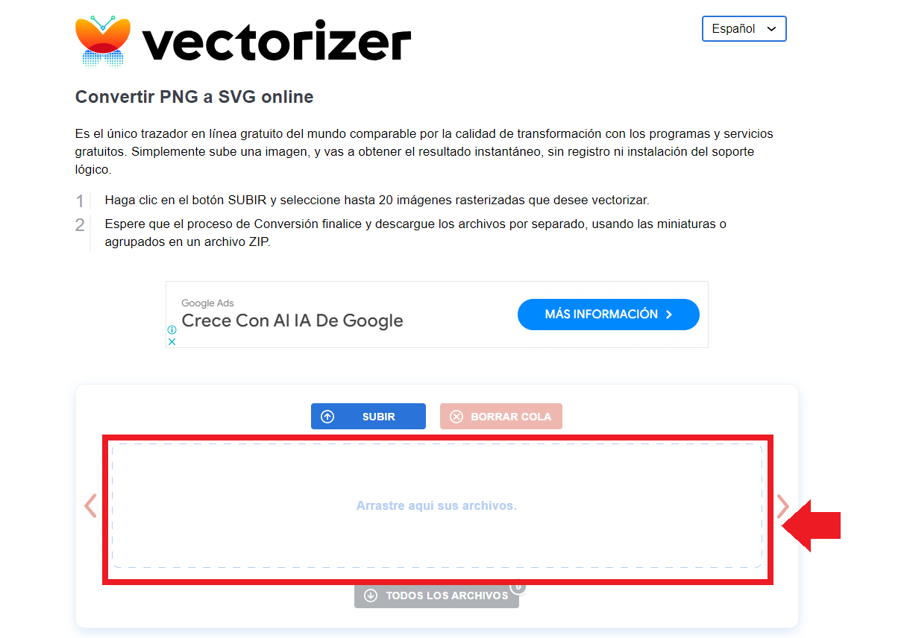
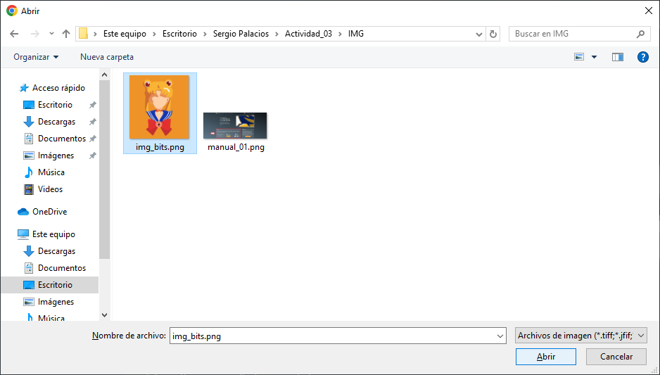
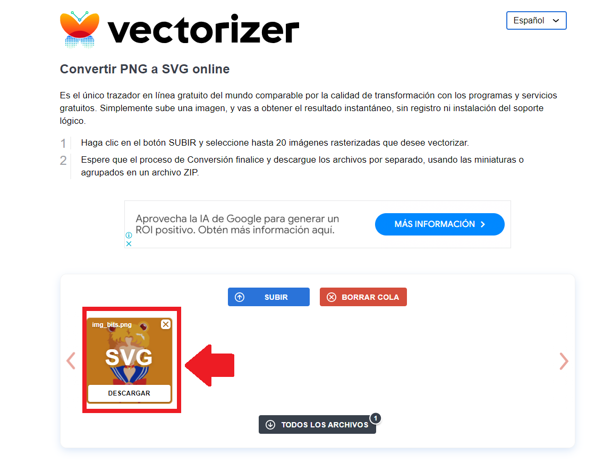

Las imágenes vectoriales son imágenes digitales que nunca pueden llegar a ser pixeladas, es decir, se adaptan a diferentes formatos y tamaños sin que la imagen pierda calidad1.
Abrimos un navegador web e ingresamos a vectorizer.es.
Damos click en la sección En Linea para cargar nuestra imágen.
Se abrirá una nueva ventana, en la cual nos permitirá buscar y seleccionar la imágen que queremos vectorizar.
Una vez finalizado el proceso, damos click sobre el botón de Descargar, obteniendo un archivo en formato SVG>2.
Y listo, Disfrute su imágen vectorizada!!
Hecho por: Sergio Palacios
Clase de Introducción a la Computación Gráfica
Universidad Militar Nueva Granada
2024